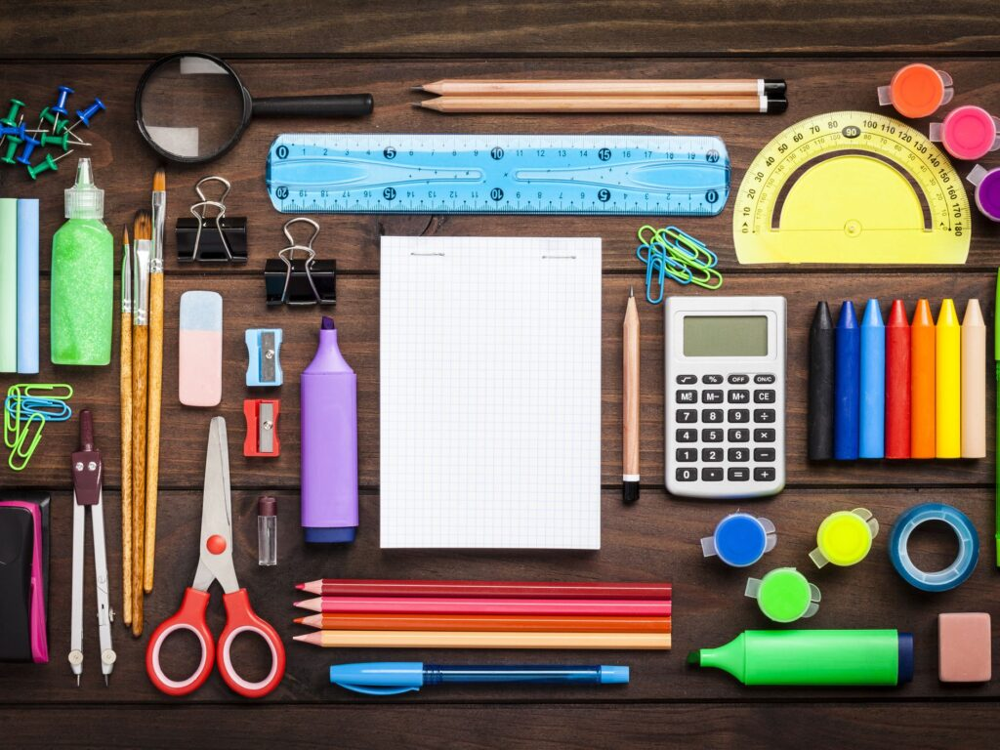
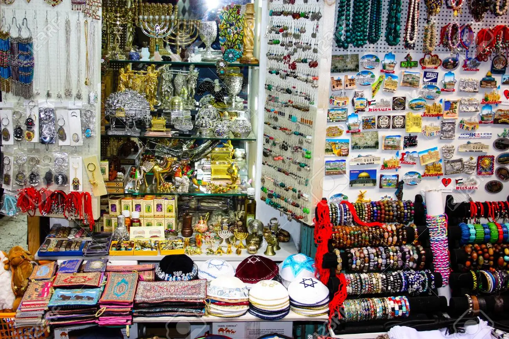
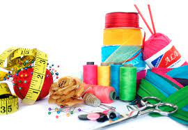
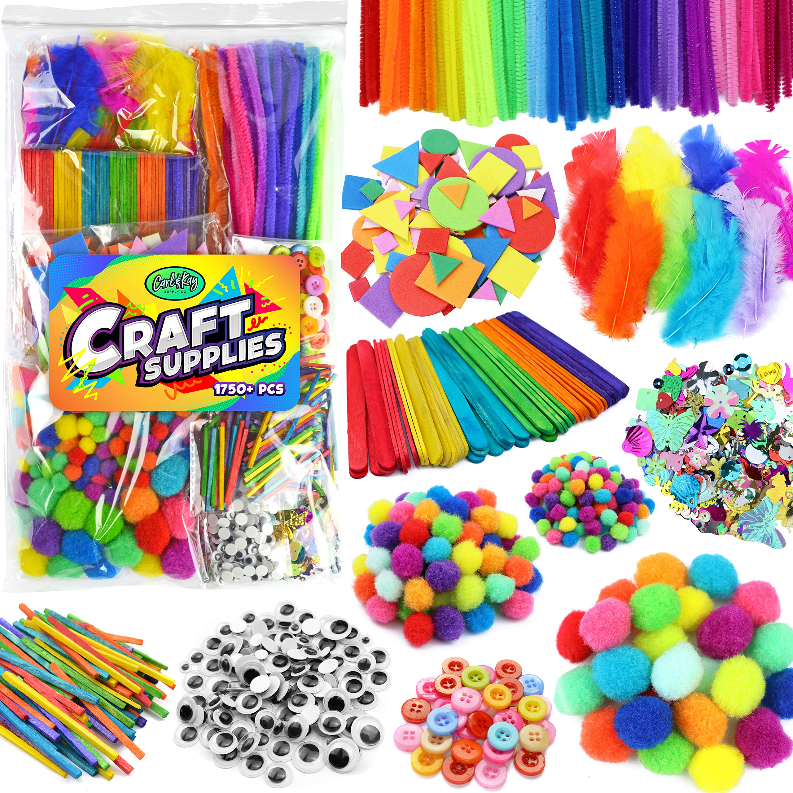

El bazar y novedades Elizabeth te ofrece una buena atencion y unos productos de buena calidad y buen precio
A continuacion, mencionaramos unos de lo prodcutos:
Corresponden a todos los productos usados con fines académicos para todos los niveles de educación (Inicial – Universitario), entre los cuales constan cuadernos, esferos, pinturas, papel de todas las clases, marcadores, carpetas, juegos didácticos, incluye servicio de anillado y copiado, entre otros.
Gran variedad de artículos usados para uso de toda clase de cliente como bisutería, cosméticos, regalos para toda ocasión, fundas de regalo, prendas de vestir internas, gran variedad de lanas, etc.
Corresponden a materiales usados para la confección y arreglo de prendas de vestir como cierres, encajes, cintas, pelón plegable, botones, hilos, etc. Estos artículos son adquiridos principalmente por los diferentes modistas y sastres del sector donde se encuentra ubicado el negocio
Artículos para realizar toda clase de adornos y manualidades para diferentes épocas del año entre las principales son: pintura acrílica, pinceles, encajes, cintas, cartón, adornos varios, fomix o goma eva, silicón, etc.
